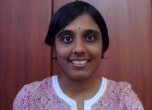

|  |
Preeti Gopal Associate Research Fellow |
About me Publications Past Favourite Resources Why go vegan? |
Hello! I have worked at the intersection of medical image computing and signal processing. As part of my PhD thesis, I developed algorithms for tomographic reconstruction from low-dose and limited-projection measurements, under the supervision of Dr. Ajit Rajwade, Dr. Sharat Chandran and Dr. Imants Svalbe. A brief description of my thesis contributions is here.
I am now slightly shifting gears and I am exploring topics in theoretical machine learning with the Applied Artificial Intelligence Institute at Deakin University.
Here's a copy of my CV
Currently, one single industry is killing us and our planet-- the animal agriculture industry. Here's a a list of scientific documentaries that discuss this.